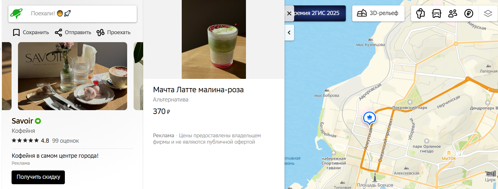

Миф 1: За МКАДом нет цивилизации
Некоторые считают, что за пределами МКАДа нет никакой инфраструктуры - ни торговых центров, ни ЖК, ни парков и кофеен. Однако это не так: за МКАДом есть не только дачи и картошка, но и современные торговые центры, парки, ПВЗ и даже кофейни с рафами и матча латте.
Парк в Калининграде
ТРЦ в Новосибирске
WB в Якутске

Кофейня во Владивостоке
Ресторан в Екатеринбурге
Миф 2: За МКАДом нет нормальных домов.
Многие думают, что за МКАДом только дачи и хрущёвки. Однако это не так:
Миф 3
Раскрывающийся контент